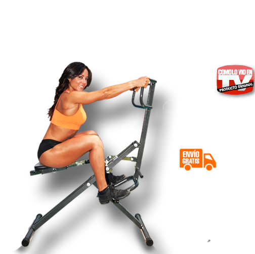
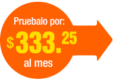
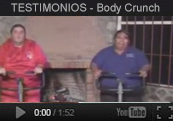
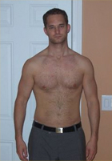
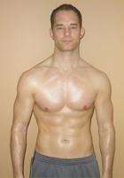
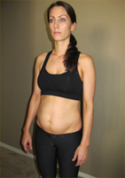
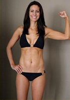
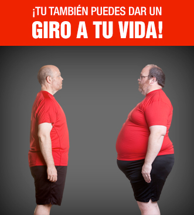
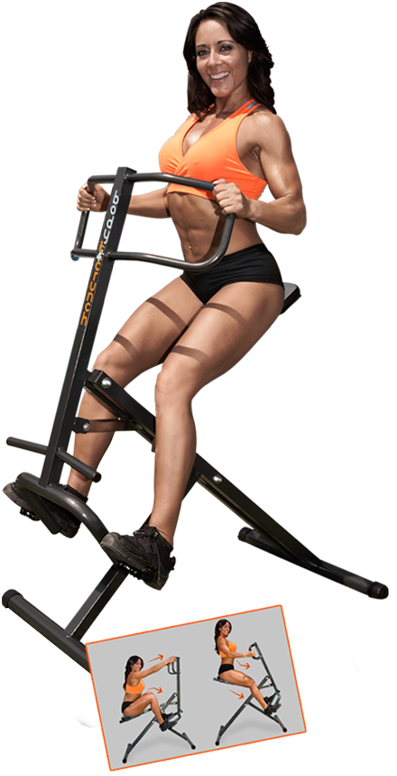
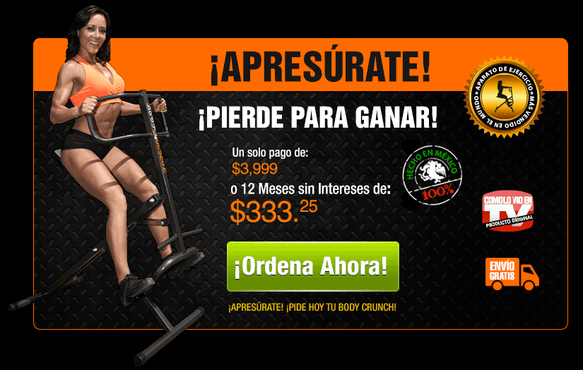

<!DOCTYPE html PUBLIC "-//W3C//DTD XHTML 1.0 Transitional//EN" "http://www.w3.org/TR/xhtml1/DTD/xhtml1-transitional.dtd">
<html xmlns="http://www.w3.org/1999/xhtml">
<head>
<meta http-equiv="Content-Type" content="text/html; charset=UTF-8" />
<title>Body Crunch</title>

<link rel="stylesheet" href="css/font-awesome.min.css">
<link rel="stylesheet" href="css/owl.carousel.css">
<link rel="stylesheet" href="css/main.css">
<link rel="stylesheet" href="css/landing.css">

<link rel="stylesheet" href="css/prettyPhoto.css" media="screen" charset="utf-8" />
<script>
  (function(i,s,o,g,r,a,m){i['GoogleAnalyticsObject']=r;i[r]=i[r]||function(){
  (i[r].q=i[r].q||[]).push(arguments)},i[r].l=1*new Date();a=s.createElement(o),
  m=s.getElementsByTagName(o)[0];a.async=1;a.src=g;m.parentNode.insertBefore(a,m)
  })(window,document,'script','//www.google-analytics.com/analytics.js','ga');

  ga('create', 'UA-17539527-40', 'auto');
  ga('send', 'pageview');

</script>
</head>

<body>
<!-- Google Code for RMKT Body Crunch Hombres -->
<!-- Remarketing tags may not be associated with personally identifiable information or placed on pages related to sensitive categories. For instructions on adding this tag and more information on the above requirements, read the setup guide: google.com/ads/remarketingsetup -->
<script type="text/javascript">
/* <![CDATA[ */
var google_conversion_id = 973637480;
var google_conversion_label = "D-wACJi8slYQ6I6i0AM";
var google_custom_params = window.google_tag_params;
var google_remarketing_only = true;
/* ]]> */
</script>
<script type="text/javascript" src="//www.googleadservices.com/pagead/conversion.js">
</script>
<noscript>
<div style="display:inline;">

</div>
</noscript>

<div class="px1000">

	<header class="ingrid-12">
    	<div id="logo_section" class="ingrid-6">
        	
        </div>
        
        <div id="phone_section" class="ingrid-6 align-right">
        	
        </div>
    </header>
    
    <div id="main_section" class="ingrid-12">
    	
        <section id="banner_1_section" class="ingrid-6">
        	
        </section>
        
        <section id="form_section" class="ingrid-6">
        	<div class="form_bg">
            	<div id="main_form">
                	<script type="text/javascript" src="http://form.jotformpro.com/jsform/42256918920964"></script>
                </div>
                
            </div>
        </section>
        
        <section id="secure_bar" class="ingrid-12">
        	
        </section>
        
		<section id="left_section" class="ingrid-7">
        	
            
			<section id="beneficios"><div class="w_padding">
            
            	<h1 class="hightlight">Beneficios Body Crunch</h1>
                	
				<ul class="beneficios_list">
                    
					<li>
						<div class="list_silueta">
							
						</div>
						<div class="list_description">
							<p>Body Crunch es ideal para personas con poco tiempo para ejercitarse y que necesitan un ejercicio fácil y divertido con el que puedan ver resultados de manera rápida y efectiva.</p>
							
						</div>
					</li>
                        
					<li>
						<div class="list_silueta">
							
						</div>
						<div class="list_description">
							<p>Ejercita los músculos de todo el cuerpo.Fortalece las articulaciones, tendones y ligamentos.</p>
							
						</div>
					</li>
                        
				</ul>
                
                <article id="beneficios_par" class="ingrid-12">
                	<p>Es ideal para personas con poco tiempo para ejercitarse y necesitan un ejercicio fácil y divertido con el que puedan ver resultados rápidos y efectivos, es adecuado tanto para personas que no han hecho ejercicio, como para personas que ya están acostumbradas a hacerlo.</p>
                </article>
                
                <article id="beneficios_log" class="ingrid-12">
                	<h3 class="hightlight">Con Body Crunch Logrará</h3>
                    
                    <ul class="log_list">
                    	<li><i class="bc_icon_silueta"></i> Piernas y Brazos fuertes, bien tonificados</li>
                        <li><i class="bc_icon_silueta"></i> Abdominales fuertes y definidos</li>
                        <li><i class="bc_icon_silueta"></i> Glúteos firmes y con volumen</li>
                    </ul>
                    
                    <p>Body Crunch es lo último en aparatos de ejercicio, con un sistema dinámico que aprovecha cada movimiento para que todos los músculos del cuerpo trabajen con su propio peso al empujar y jalar, ejercitando las extremidades, el torso y los glúteos al mismo tiempo, ayudando a mantener y mejorar la elasticidad en todo el cuerpo, desarrollar el acondicionamiento físico cardiovascular y favorecer la tonificación muscular para obtener una figura muy atractiva.</p>
                    
                    <div class="button_center">
                    	<a href="#form_section" class="scroll"></a>
                    </div>
                </article>
                
            </div></section>
            
            <section id="testimonial"><div class="w_padding">
            	
                <h2 class="hightlight_2 centered_title" style="font-style:italic;margin:0;margin-bottom:10px;">¡Clientes 100% Satisfechos!</h2>
                
                <div id="testimonial_carousel">
                	<div class="t_car_item">
                    	<a href="https://www.youtube.com/watch?v=Ct6cb-7TaGE?iframe=true&width=560&height=315" class="lightboxed"></a>
                    </div>
                    <div class="t_car_item">
                    	<a href="https://www.youtube.com/watch?v=wZ522AwzEM0?iframe=true&width=560&height=315" class="lightboxed"></a>
                    </div>
                </div>
                
                <hr />
                
                <h2 class="hightlight_2 centered_title" style="font-style:italic;margin-top:10px;margin-bottom:30px">¡Ellos perdieron para ganar!</h2>
                
                <div class="ingrid-12 before_after">
                	
                    <div class="ingrid-6 ba_pics">
                    	<h3>ANTES</h3>
                       	
                    </div>
                    
                    <div class="ingrid-6 ba_pics">
                    	<h3>DESPUÉS</h3>
                       	
                    </div>
                    
                    <article class="testimonial_desc">
                    	<h3>Oscar Olvera, 33 años. México DF</h3>
                        <p style="font-style:italic;font-size:12px;">En tan solo 6 meses he logradio bajar 15 Kilos, es realmente un milagro y le doy gracias a Dios y a Body Crunch de formar parte de mi vida todos los días... Pues mi estilo de vida realmente ha cambiado.</p>

                    </article>
                </div>
                
                <div class="ingrid-12 before_after">
                	
                    <div class="ingrid-6 ba_pics">
                    	<h3>ANTES</h3>
                       	
                    </div>
                    
                    <div class="ingrid-6 ba_pics">
                    	<h3>DESPUÉS</h3>
                       	
                    </div>
                    
                    <article class="testimonial_desc">
                    	<h3>Denisse Fierro, 30 años. Sinaloa</h3>
                        <p style="font-style:italic;font-size:12px;">Después de mi embarazo subí 12 Kilos y gracias a Body Crunch ya logré perder 5 kilos en tan solo dos meses. Es incríeble ¡Realmente funciona!</p>
                    </article>
                </div>
                
               
            </div></section>
            
             
            
        </section><!-- END OF LEFT SECTION -->

        <section id="right_section" class="ingrid-5">
        	
            <article id="sidebar_banner_1">
            	
                
            </article>
            
            <article id="sidebar_video">
            	
                <div class="sidebar_video_wrapper">
                	<iframe width="100%" height="200" src="https://youtube.com/embed/IhglAlXubEQ?html5=1&theme=light&modestbranding=1&showinfo=0&autohide=1&controls=0&rel=0" frameborder="0"></iframe>
                    <div class="black_over"></div>
                </div>
            </article>
            
            <article id="sidebar_banner_2">
            	
            </article>
            
            <article id="sidebar_banner_3">
            	
            </article>
            
        </section><!-- END OF RIGHT SECTION -->
        
        <!--
        <div class="button_center">
			<a href="#form_section" class="scroll"></a>
		</div>
		
        <section id="tv_videos" class="ingrid-12" style="max-width:790px;margin-left:33px">
        	
            <ul class="tv_videos_list">
            	<li>
					<a href="https://www.youtube.com/watch?v=n4HGcjXlExs?iframe=true&width=560&height=315" class="lightboxed"></a>
				</li>
                <li>
					<a href="https://www.youtube.com/watch?v=n4HGcjXlExs?iframe=true&width=560&height=315" class="lightboxed"></a>
				</li>
                <li>
					<a href="https://www.youtube.com/watch?v=n4HGcjXlExs?iframe=true&width=560&height=315" class="lightboxed"></a>
				</li>
                <li>
					<a href="https://www.youtube.com/watch?v=n4HGcjXlExs?iframe=true&width=560&height=315" class="lightboxed"></a>
				</li>
            </ul>
            
        </section>
		-->
        
		<section id="footer_banner_wrap" class="ingrid-12">
			<a href="#form_section" class="scroll">
				
			</a>
        </section>
        
    </div><!-- END OF MAIN SECTION -->
    
    <div class="footer_rights ingrid-12"><p>Todos los derechos reservados. Body Crunch 2014</p></div>

</div><!-- END OF MAIN WRAPPER -->

<script type="text/javascript" src="http://ajax.googleapis.com/ajax/libs/jquery/1.9.1/jquery.min.js"></script>
<script type="text/javascript" src="js/owl.carousel.min.js"></script>
<script type="text/javascript" src="js/jquery.prettyPhoto.js" charset="utf-8"></script>
<script>
	jQuery(document).ready(function(e) {
		$("#testimonial_carousel").owlCarousel({
			items:2,
			margin:10,
			nav:true,
			navText:['',''],
			autoplay:true,
			loop:true
		});
		  
		$('a.lightboxed').prettyPhoto({social_tools:false,theme: 'dark_square',});
		  
		$(".scroll").click(function(event){		
			event.preventDefault();
			$('html,body').animate({scrollTop:$(this.hash).offset().top},1200);
		});
		

		function addEvent(obj, evt, fn) {
			if (obj.addEventListener) {
				obj.addEventListener(evt, fn, false);
			}
			else if (obj.attachEvent) {
				obj.attachEvent("on" + evt, fn);
			}
		}
		
		addEvent(document, "mouseout", function(e) {
			e = e ? e : window.event;
			var from = e.relatedTarget || e.toElement;
			if (!from || from.nodeName == "HTML") {
				$.prettyPhoto.open('images/popup.png');
			}
		});

		
    });
</script>

</body>
</html>
